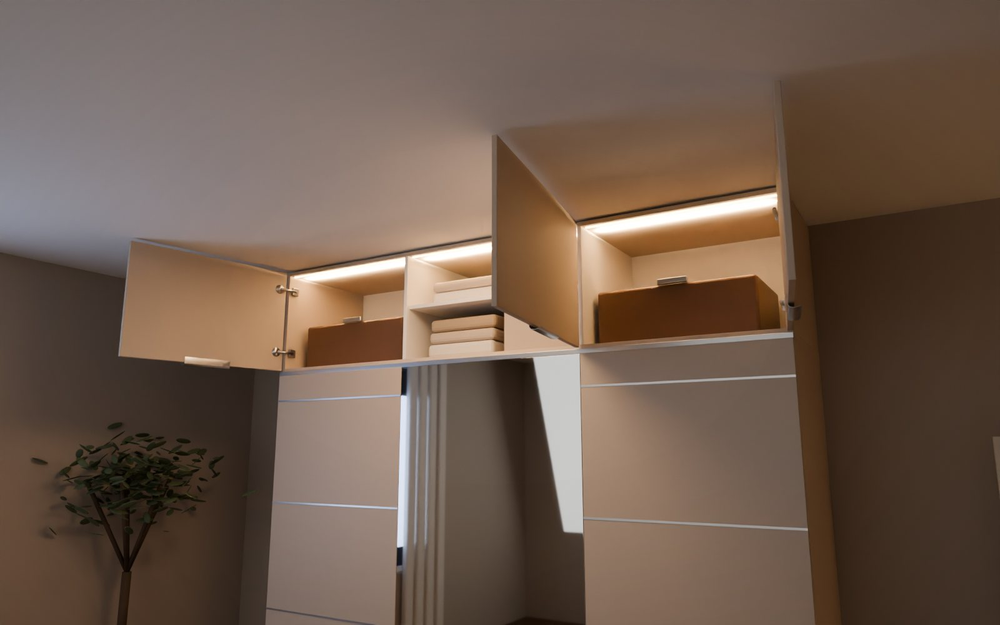

Ø2,5
ZENIT
Kollekció
A ZENIT
Ahol a szekrényed véget ér
A ZENIT
A hiányzó fél méter, megoldva
Anyagok és színek
Kasmír, tölgy, fény és tükör
Manufaktúra
Kéz, gép, terv – és díjak
Inspiráció
Egy forma, ezer otthon
Így készül
Tervtől a plafonig
Örökgarancia
Egy életre tervezve
Concierge
Tervező
Élő 3D, a te méreteidre
Tervező
Élő 3D – a te arányaidra
Az Ön terve
Mentett tervek, ajánlat
Szerelés
Lépésről lépésre, ábrákkal
Kézikönyv
Személyre szabott, nyomtatható
Személyes konzultáció
Tervezőnk visszahív
HU
/ EN
0
Tervezd meg
×
Kollekció
A ZENIT
Anyagok és színek
Manufaktúra
Inspiráció
Így készül
Örökgarancia
Concierge
Tervező
Az Ön terve
Szerelés
Kézikönyv
Személyes konzultáció
A projekt
A projektről
Napló
Kövess minket
Szobában
Stúdió
▶ Szerelés
◫
⟲
⤢
Szerelés
250
cm ×
53
cm ×
60
cm
Forgasd · nagyíts · kattints egy ajtóra

A tiéd
Minden döntés a tiéd.
A pontosság a miénk.